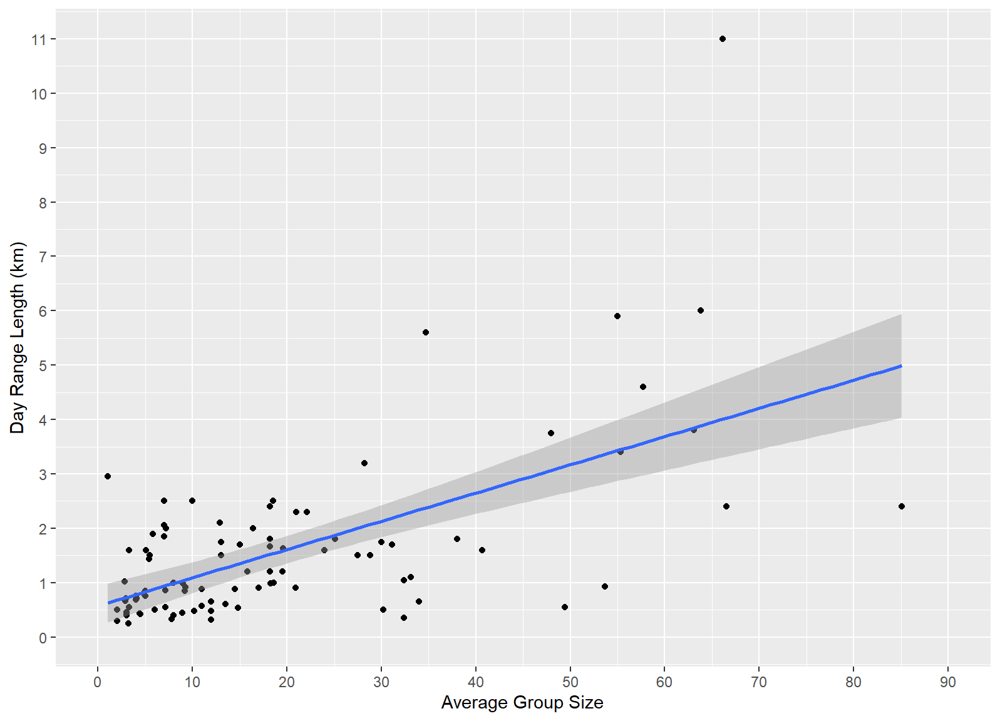
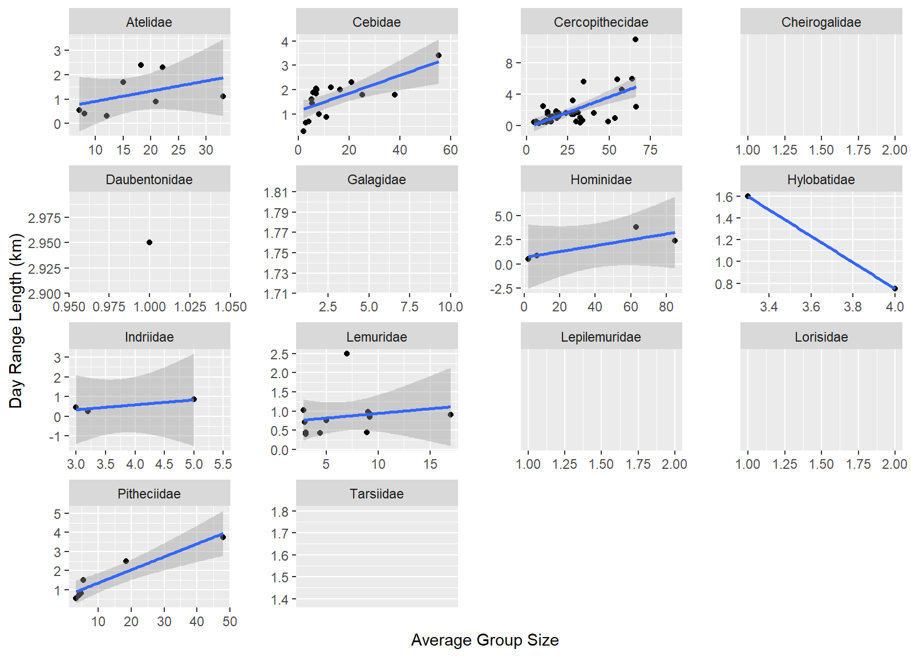

library(tidyverse)
library(knitr)
library(kableExtra)
library(dplyr)
library(ggplot2)
library(ggExtra)EDA-challenge
Introduction
This is the documentation for the script used for the EDA challenge. The challenge will use various short pieces of code to create new variables for an existing data set and create plots to visualize the data. The data for this work contains a subset of the data set in Kamilar and Cooper. The data relates to primate ecology, behavior, and life history and was obtained from the “ada-datasets” Github repository by Anthony Di Fiore.
Preliminary Work
Before starting the work, first we must load the packages necessary for the analysis. For this particular work, we will load:
Once the packages have been loaded, we must also load the data into R in a way that the program can read and interact with it. To this end, first I command R to load the data and then to read it as variable ‘d.’
f <- "https://raw.githubusercontent.com/difiore/ada-datasets/main/data-wrangling.csv"
d <- read_csv(f, col_names = TRUE)Now, we should have this table loaded into R:
| Scientific_Name | Family | Genus | Species | Brain_Size_Species_Mean | Body_mass_male_mean | Body_mass_female_mean | MeanGroupSize | AdultMales | AdultFemale | GR_MidRangeLat_dd | Precip_Mean_mm | Temp_Mean_degC | HomeRange_km2 | DayLength_km | Fruit | Leaves | Fauna | Canine_Dimorphism | Feed | Move | Rest | Social |
|---|---|---|---|---|---|---|---|---|---|---|---|---|---|---|---|---|---|---|---|---|---|---|
| Allenopithecus_nigroviridis | Cercopithecidae | Allenopithecus | nigroviridis | 58.02 | 6130 | 3180 | NA | NA | NA | -0.17 | 1574.0 | 25.2 | NA | NA | NA | NA | NA | 2.210 | NA | NA | NA | NA |
| Allocebus_trichotis | Cercopithecidae | Allocebus | trichotis | NA | 92 | 84 | 1.00 | 1.000 | 1.000 | -16.59 | 1902.3 | 20.3 | NA | NA | NA | NA | NA | NA | NA | NA | NA | NA |
| Alouatta_belzebul | Atelidae | Alouatta | belzebul | 52.84 | 7270 | 5520 | 7.00 | 1.000 | 1.000 | -6.80 | 1643.5 | 24.9 | NA | NA | 57.3 | 19.1 | 0 | 1.811 | 13.75 | 18.75 | 57.30 | 10.00 |
| Alouatta_caraya | Atelidae | Alouatta | caraya | 52.63 | 6525 | 4240 | 8.00 | 2.300 | 3.300 | -20.34 | 1166.4 | 22.9 | NA | 0.40 | 23.8 | 67.7 | 0 | 1.542 | 15.90 | 17.60 | 61.60 | 4.90 |
| Alouatta_guariba | Atelidae | Alouatta | guariba | 51.70 | 5800 | 4550 | 6.53 | 1.370 | 2.200 | -21.13 | 1332.3 | 19.6 | 0.030 | NA | 5.2 | 73 | 0 | 1.783 | 18.33 | 14.33 | 64.37 | 3.00 |
| Alouatta_palliata | Atelidae | Alouatta | palliata | 49.88 | 7150 | 5350 | 12.00 | 2.900 | 6.300 | 6.95 | 1852.6 | 23.7 | 0.190 | 0.32 | 33.1 | 56.4 | 0 | 1.703 | 17.94 | 12.32 | 66.14 | 3.64 |
| Alouatta_pigra | Atelidae | Alouatta | pigra | 51.13 | 11400 | 6430 | 6.60 | 1.925 | 2.175 | 18.80 | 1341.3 | 25.1 | 0.300 | NA | 40.8 | 45.1 | 0 | 1.109 | 24.40 | 9.80 | 61.90 | 3.80 |
| Alouatta_seniculus | Atelidae | Alouatta | seniculus | 55.22 | 6690 | 5210 | 7.10 | 1.700 | 2.200 | 0.68 | 1823.4 | 25.1 | 0.100 | 0.55 | 40.0 | 48.1 | 0 | 1.464 | 12.70 | 6.20 | 78.50 | 2.50 |
| Aotus_azarai | Cebidae | Aotus | azarai | 20.67 | 1180 | 1230 | 3.10 | 1.000 | 1.000 | -17.05 | 1010.9 | 24.6 | 0.095 | NA | 45.0 | 41 | NA | NA | NA | NA | NA | NA |
| Aotus_brumbacki | Cebidae | Aotus | brumbacki | NA | NA | NA | 3.00 | 1.000 | 1.000 | NA | NA | NA | NA | NA | NA | NA | NA | NA | NA | NA | NA | NA |
Adding New Variables
For this stage of the work, I created three new variables.
- BSD (body size dimorphism): refers to the ratio of the average male to female body mass.
d$BSD <- d$Body_mass_male_mean/d$Body_mass_female_mean- sex_ratio: refers to the ratio of the number of adult females to adult males in a typical group.
d$sex_ratio <- d$AdultFemale/d$AdultMales- DI (defensibility index): refers to the ratio of day range length to the diameter of the home range.
a<- d$HomeRange_km2
d$diameter <- 2*sqrt(a/pi)
d$DI<- d$DayLength_km/d$diameter
d$diameter<- NULLOnce those three variables have been added, the new table should look like this:
| Scientific_Name | Family | Genus | Species | Brain_Size_Species_Mean | Body_mass_male_mean | Body_mass_female_mean | MeanGroupSize | AdultMales | AdultFemale | GR_MidRangeLat_dd | Precip_Mean_mm | Temp_Mean_degC | HomeRange_km2 | DayLength_km | Fruit | Leaves | Fauna | Canine_Dimorphism | Feed | Move | Rest | Social | BSD | sex_ratio | DI |
|---|---|---|---|---|---|---|---|---|---|---|---|---|---|---|---|---|---|---|---|---|---|---|---|---|---|
| Allenopithecus_nigroviridis | Cercopithecidae | Allenopithecus | nigroviridis | 58.02 | 6130 | 3180 | NA | NA | NA | -0.17 | 1574.0 | 25.2 | NA | NA | NA | NA | NA | 2.210 | NA | NA | NA | NA | 1.9276730 | NA | NA |
| Allocebus_trichotis | Cercopithecidae | Allocebus | trichotis | NA | 92 | 84 | 1.00 | 1.000 | 1.000 | -16.59 | 1902.3 | 20.3 | NA | NA | NA | NA | NA | NA | NA | NA | NA | NA | 1.0952381 | 1.000000 | NA |
| Alouatta_belzebul | Atelidae | Alouatta | belzebul | 52.84 | 7270 | 5520 | 7.00 | 1.000 | 1.000 | -6.80 | 1643.5 | 24.9 | NA | NA | 57.3 | 19.1 | 0 | 1.811 | 13.75 | 18.75 | 57.30 | 10.00 | 1.3170290 | 1.000000 | NA |
| Alouatta_caraya | Atelidae | Alouatta | caraya | 52.63 | 6525 | 4240 | 8.00 | 2.300 | 3.300 | -20.34 | 1166.4 | 22.9 | NA | 0.40 | 23.8 | 67.7 | 0 | 1.542 | 15.90 | 17.60 | 61.60 | 4.90 | 1.5389151 | 1.434783 | NA |
| Alouatta_guariba | Atelidae | Alouatta | guariba | 51.70 | 5800 | 4550 | 6.53 | 1.370 | 2.200 | -21.13 | 1332.3 | 19.6 | 0.030 | NA | 5.2 | 73 | 0 | 1.783 | 18.33 | 14.33 | 64.37 | 3.00 | 1.2747253 | 1.605839 | NA |
| Alouatta_palliata | Atelidae | Alouatta | palliata | 49.88 | 7150 | 5350 | 12.00 | 2.900 | 6.300 | 6.95 | 1852.6 | 23.7 | 0.190 | 0.32 | 33.1 | 56.4 | 0 | 1.703 | 17.94 | 12.32 | 66.14 | 3.64 | 1.3364486 | 2.172414 | 0.6506061 |
| Alouatta_pigra | Atelidae | Alouatta | pigra | 51.13 | 11400 | 6430 | 6.60 | 1.925 | 2.175 | 18.80 | 1341.3 | 25.1 | 0.300 | NA | 40.8 | 45.1 | 0 | 1.109 | 24.40 | 9.80 | 61.90 | 3.80 | 1.7729393 | 1.129870 | NA |
| Alouatta_seniculus | Atelidae | Alouatta | seniculus | 55.22 | 6690 | 5210 | 7.10 | 1.700 | 2.200 | 0.68 | 1823.4 | 25.1 | 0.100 | 0.55 | 40.0 | 48.1 | 0 | 1.464 | 12.70 | 6.20 | 78.50 | 2.50 | 1.2840691 | 1.294118 | 1.5413726 |
| Aotus_azarai | Cebidae | Aotus | azarai | 20.67 | 1180 | 1230 | 3.10 | 1.000 | 1.000 | -17.05 | 1010.9 | 24.6 | 0.095 | NA | 45.0 | 41 | NA | NA | NA | NA | NA | NA | 0.9593496 | 1.000000 | NA |
| Aotus_brumbacki | Cebidae | Aotus | brumbacki | NA | NA | NA | 3.00 | 1.000 | 1.000 | NA | NA | NA | NA | NA | NA | NA | NA | NA | NA | NA | NA | NA | NA | 1.000000 | NA |
Data Visualizations
Relationship between day range length and time spent moving
Overall relationship:
p <- ggplot(data = d, aes(x = Move, y = DayLength_km)) +
scale_x_continuous(limits = c(0, 40), breaks = seq(0, 40, by = 5)) +
scale_y_continuous(limits = c(0, 11), breaks = seq(0, 11, by = 1)) +
xlab("Time Spent Moving (min)") +
ylab("Day Range Length (km)") +
geom_point(na.rm = TRUE) +
theme(legend.position = "bottom", legend.title = element_blank()) +
geom_smooth(method = "lm", fullrange = TRUE, na.rm = TRUE) +
theme(plot.margin = margin(1, 1, 1, 1, "cm"))
pRelationship by family:
p <- ggplot(data = d, aes(x = (Move), y = (DayLength_km))) +
xlab("Time Spent Moving (min)") +
ylab("Day Range Length (km)") +
geom_point(na.rm = TRUE) +
theme(legend.position = "bottom", legend.title = element_blank()) +
facet_wrap(~Family, ncol = 4, nrow = 4, scales = "free") +
theme(legend.position = "none", panel.spacing.x = unit(0.75, "cm"), panel.spacing.y = unit(0.2, "cm")) +
geom_smooth(method = "lm", fullrange = FALSE, na.rm = TRUE)
pQuestions
Generally, there is a slight trend of species traveling farther when they spend more time moving. However, as seen by the regression line, the upward slope is so slim, it is almost negligible. Therefore, while the graph does indicate a positive correlation between time moving and distance traveled, overall it is a weak correlation. Furthermore, the weak correlation is also apparent when looking at the individual graphs for each family. However, there seems to be some variability within the same families. For example, the Cercopithecidae consistently spend around 10 to 40 minutes moving and their day range spans about 0 to 2.5 km, however there are a few outliers that move around the same amount of time each day but travel up to 5 km daily. That is twice as much as most of the population within the family. Although less clear on the graph above, there is also variability in the Hominidae family. All of the sample ranges from 10 to 20 minutes of movement daily, but the distance travel shows no clear pattern.
In terms of transforming either of the variables, I would transform the day length range variable because the values range from 0.25 to 11, even though 11 is an obvious outlier, as the next highest values are 5 and 6. To transform the data related to this variable I would probably scale it by normalization so all values are on a scale from 0 to 1 or use the log() function to both compress the outlier and spread the smaller values.
Although I did not transform the data for this exercise, I did change the visualizations of the plots in order to make them more readable. Considering the questions that were asked, on the facet_wrapped plot, I thought it was better to understand the individual patterns for each taxa, rather than compare for common results. In other words, I focused on comparing trends rather than values. For example, I was not focused on whether Cebidae and Hominidae spent a similar amount of time moving or traveled similar distances. Instead, I was more interested in the fact that both taxa showed no correlation between the two variables (i.e. the line of regression was horizontal and parallel to the x-axis, indicating a slope of zero or near zero). To visualize this better, I set the scales on the facet_wrap code to “free” so that the scales would be more in line with the data in each facet. I also edited the spacing between the panels to make it more readable and easier to understand.
Relationship between day range length and group size
Overall relationship:
p <- ggplot(data = d, aes(x = (MeanGroupSize), y = (DayLength_km))) +
scale_x_continuous(limits = c(0, 90), breaks = seq(0, 90, by = 10)) +
scale_y_continuous(limits = c(0, 11), breaks = seq(0, 11, by = 1)) +
xlab("Average Group Size") +
ylab("Day Range Length (km)") +
geom_point(na.rm = TRUE) +
theme(legend.position = "bottom", legend.title = element_blank()) +
geom_smooth(method = "lm", fullrange = FALSE, na.rm = TRUE)
p
Relationship by family:
p <- ggplot(data = d, aes(x = (MeanGroupSize), y = (DayLength_km))) +
xlab("Average Group Size") +
ylab("Day Range Length (km)") +
geom_point(na.rm = TRUE) +
theme(legend.position = "bottom", legend.title = element_blank()) +
facet_wrap(~Family, ncol = 4, nrow = 4, scales = "free") +
theme(legend.position = "none", panel.spacing.x = unit(0.75, "cm"), panel.spacing.y = unit(0.2, "cm")) +
geom_smooth(method = "lm", fullrange = FALSE, na.rm = TRUE)
p
Questions
Similarly to the comparison of day range and time spent moving, in this case there is also a weak positive correlation between average group size and day range. However, in the graph showing the overall relationship between the two variables I found it interesting that smaller groups tend to have similar day ranges, while the is more variability among the larger groups. Despite not necessarily having long day ranges, larger groups, regardless of family, tend to either move significantly less or about the same amount than smaller groups. Regardless, I did find interesting the outlier within the larger groups that moves over twice the amount as any other group. By studying the individual graphs, I can tell that the outlier belongs to the Cercopithecidae family. Furthermore, while they have the greater variability in group size, the day range length for the groups within this family range from 0 to 4 km, which is in line with the movement in other families of various group sizes.
Again, this comparison uses the same y-axis variable as the one above. As such, I have the same opinion about normalizing the values of that data. On the other hand, I would not transform the variable relating to the mean group size, as the values on that are more evenly spread. Like before, in this comparison I also used the scale= “free” on the facet-wrap plot to better observe the differing patterns for each taxa. Despite the different values for each taxa, I was impressed that there is a consistent, albeit weak, positive correlation between the two variables. The only taxa that does not follow this pattern is Hylobatidae. However, the fact that there are only to values for that taxa, I would consider this insufficient data rather than state a negative correlation.
Relationship between canine size dimorphism and body size dimorphism
Overall relationship:
p <- ggplot(data = d, aes(x = (BSD), y = (Canine_Dimorphism))) +
xlab("Body Size Dimorphism") +
ylab("Canine Size Dimorphism") +
geom_point(na.rm = TRUE) +
scale_y_continuous(breaks = seq(1, 6, by = 0.5)) +
scale_x_continuous(breaks = seq(1, 3, by = 0.5)) +
theme(legend.position = "bottom", legend.title = element_blank()) +
geom_smooth(method = "lm", fullrange = FALSE, na.rm = TRUE)
pRelationship by family:
p <- ggplot(data = d, aes(x = (BSD), y = (Canine_Dimorphism))) +
xlab("Body Size Dimorphism)") +
ylab("Canine Dimorphism") +
geom_point(na.rm = TRUE) +
theme(legend.position = "bottom", legend.title = element_blank()) +
facet_wrap(~Family, ncol = 4, nrow = 4, scales = "free") +
theme(legend.position = "none", panel.spacing = unit(0.5, "cm")) +
geom_smooth(method = "lm", fullrange = FALSE, na.rm = TRUE)
p
Questions
Generally speaking, there is a definite positive correlation between general body size dimorphism and specific canine dimorphism. On the other hand, when looking at the individual taxa, there are multiple different patterns. There are three taxa (Cheirogalidae, Lepilemuridae, and Lemuridae) that show a negative correlation between body size dimorphism and canine dimorphism. However, two of those taxa have a very small sample, thus I would consider the data insuficient. Furthermore, there are two taxa (Galagidae and Indriidae) with no correlation between the two variables. Although I would also include Indriidae in the “insufficient data” category, it is interesting that in the Galagidae the lack of correlation is very prominent.
Diet Strategy
Creating the new variable for diet strategy:
d$diet_strategy <- if_else(d$Fruit >= 50, "frugivore",ifelse(d$Leaves >= 50, "folivore", ifelse(d$Fruit < 50 & d$Leaves < 50, "omnivore", NA)))Now, we have a new variable in the table:
| Scientific_Name | Family | Genus | Species | Brain_Size_Species_Mean | Body_mass_male_mean | Body_mass_female_mean | MeanGroupSize | AdultMales | AdultFemale | GR_MidRangeLat_dd | Precip_Mean_mm | Temp_Mean_degC | HomeRange_km2 | DayLength_km | Fruit | Leaves | Fauna | Canine_Dimorphism | Feed | Move | Rest | Social | BSD | sex_ratio | DI | diet_strategy |
|---|---|---|---|---|---|---|---|---|---|---|---|---|---|---|---|---|---|---|---|---|---|---|---|---|---|---|
| Allenopithecus_nigroviridis | Cercopithecidae | Allenopithecus | nigroviridis | 58.02 | 6130 | 3180 | NA | NA | NA | -0.17 | 1574.0 | 25.2 | NA | NA | NA | NA | NA | 2.210 | NA | NA | NA | NA | 1.9276730 | NA | NA | NA |
| Allocebus_trichotis | Cercopithecidae | Allocebus | trichotis | NA | 92 | 84 | 1.00 | 1.000 | 1.000 | -16.59 | 1902.3 | 20.3 | NA | NA | NA | NA | NA | NA | NA | NA | NA | NA | 1.0952381 | 1.000000 | NA | NA |
| Alouatta_belzebul | Atelidae | Alouatta | belzebul | 52.84 | 7270 | 5520 | 7.00 | 1.000 | 1.000 | -6.80 | 1643.5 | 24.9 | NA | NA | 57.3 | 19.1 | 0 | 1.811 | 13.75 | 18.75 | 57.30 | 10.00 | 1.3170290 | 1.000000 | NA | frugivore |
| Alouatta_caraya | Atelidae | Alouatta | caraya | 52.63 | 6525 | 4240 | 8.00 | 2.300 | 3.300 | -20.34 | 1166.4 | 22.9 | NA | 0.40 | 23.8 | 67.7 | 0 | 1.542 | 15.90 | 17.60 | 61.60 | 4.90 | 1.5389151 | 1.434783 | NA | folivore |
| Alouatta_guariba | Atelidae | Alouatta | guariba | 51.70 | 5800 | 4550 | 6.53 | 1.370 | 2.200 | -21.13 | 1332.3 | 19.6 | 0.030 | NA | 5.2 | 73 | 0 | 1.783 | 18.33 | 14.33 | 64.37 | 3.00 | 1.2747253 | 1.605839 | NA | folivore |
| Alouatta_palliata | Atelidae | Alouatta | palliata | 49.88 | 7150 | 5350 | 12.00 | 2.900 | 6.300 | 6.95 | 1852.6 | 23.7 | 0.190 | 0.32 | 33.1 | 56.4 | 0 | 1.703 | 17.94 | 12.32 | 66.14 | 3.64 | 1.3364486 | 2.172414 | 0.6506061 | folivore |
| Alouatta_pigra | Atelidae | Alouatta | pigra | 51.13 | 11400 | 6430 | 6.60 | 1.925 | 2.175 | 18.80 | 1341.3 | 25.1 | 0.300 | NA | 40.8 | 45.1 | 0 | 1.109 | 24.40 | 9.80 | 61.90 | 3.80 | 1.7729393 | 1.129870 | NA | omnivore |
| Alouatta_seniculus | Atelidae | Alouatta | seniculus | 55.22 | 6690 | 5210 | 7.10 | 1.700 | 2.200 | 0.68 | 1823.4 | 25.1 | 0.100 | 0.55 | 40.0 | 48.1 | 0 | 1.464 | 12.70 | 6.20 | 78.50 | 2.50 | 1.2840691 | 1.294118 | 1.5413726 | omnivore |
| Aotus_azarai | Cebidae | Aotus | azarai | 20.67 | 1180 | 1230 | 3.10 | 1.000 | 1.000 | -17.05 | 1010.9 | 24.6 | 0.095 | NA | 45.0 | 41 | NA | NA | NA | NA | NA | NA | 0.9593496 | 1.000000 | NA | omnivore |
| Aotus_brumbacki | Cebidae | Aotus | brumbacki | NA | NA | NA | 3.00 | 1.000 | 1.000 | NA | NA | NA | NA | NA | NA | NA | NA | NA | NA | NA | NA | NA | NA | 1.000000 | NA | NA |
Visualizing Diet Strategy
e <- d |>
filter(!is.na(diet_strategy))
p <- ggplot(data = e,
aes(x = diet_strategy, y = MeanGroupSize))+
geom_boxplot(na.rm = TRUE)+
theme(axis.text.x = element_text(angle = 90))+
ylab("MeanGroupSize")+
labs(x="Dietary Strategy", y= "Average Group Size")
pQuestion
Frugivores have more varied group sizes. Although there are some smaller groups that the folivores, in general they to tend to live in larger groups. However, despite the outliers in the frugivore category, the omnivores are the ones who live in the largest groups.
{dplyr} Code
s <-mutate(d, Binomial = paste(Genus, Species, sep = " ")) |>
select(Binomial, Family, Brain_Size_Species_Mean, Body_mass_male_mean) |>
group_by(Family) |>
summarise(avgB = mean(Brain_Size_Species_Mean, na.rm = TRUE), avgM = mean(Body_mass_male_mean,na.rm = TRUE)) |>
arrange(avgB)
s# A tibble: 14 × 3
Family avgB avgM
<chr> <dbl> <dbl>
1 Tarsiidae 3.26 131
2 Cheirogalidae 4.04 193.
3 Galagidae 5.96 395.
4 Lepilemuridae 7.27 792
5 Lorisidae 8.67 512.
6 Lemuridae 23.1 2077.
7 Cebidae 23.9 1012.
8 Indriidae 27.3 3638.
9 Daubentonidae 44.8 2620
10 Pitheciidae 56.3 1955.
11 Atelidae 80.6 7895.
12 Cercopithecidae 85.4 9543.
13 Hylobatidae 101. 6926.
14 Hominidae 410. 98681.